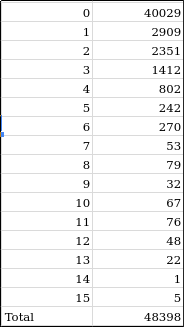
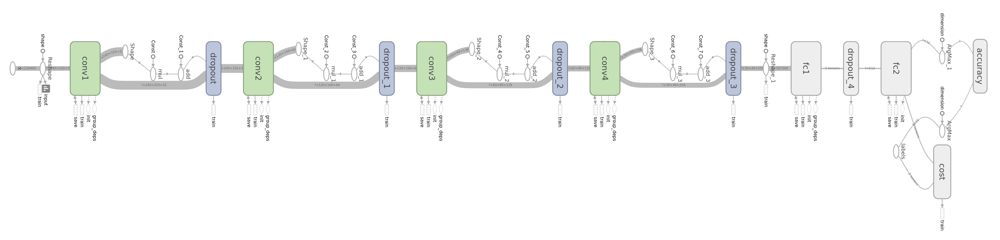
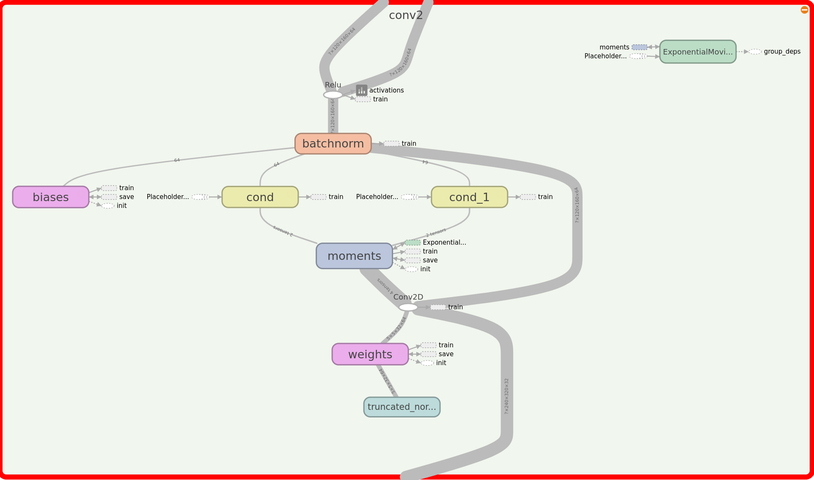
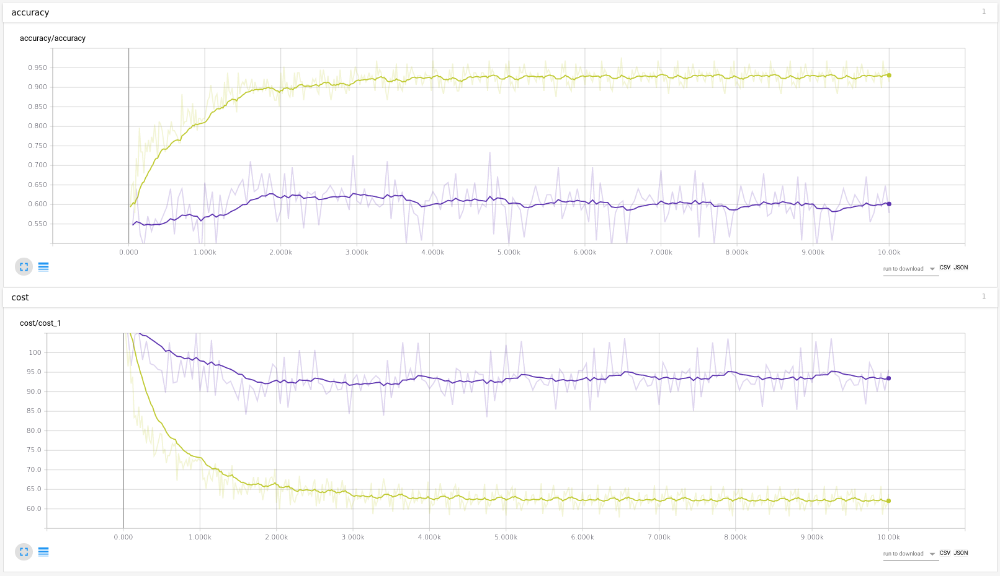
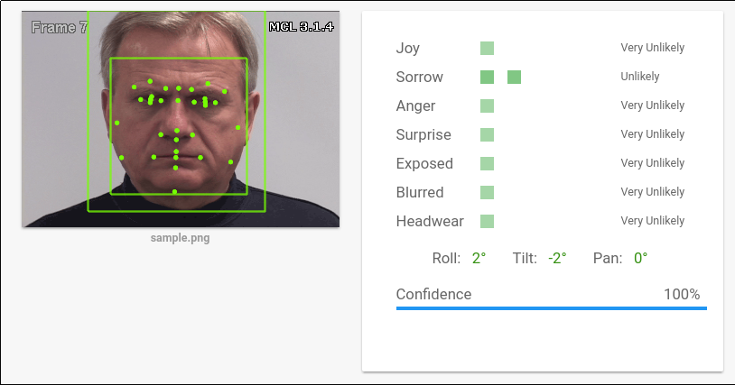
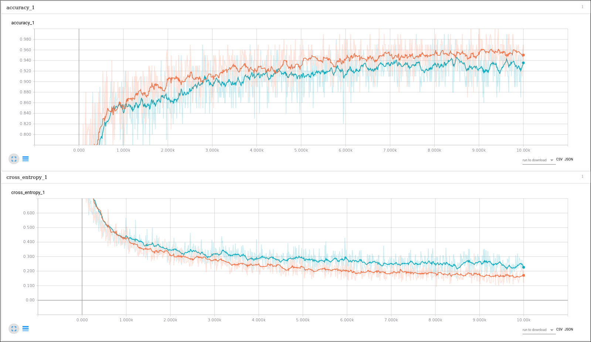
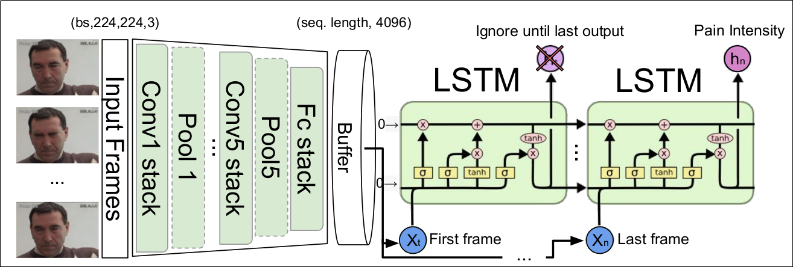
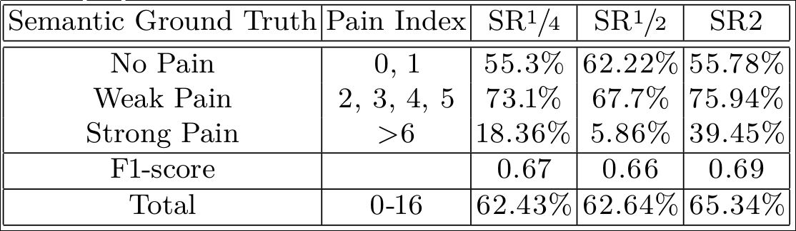

Willian Ver Valem Paiva
Created: 2017-05-27 Sat 14:31
Objective of this presentation
- Technical choices made (open for change)
- the data
- tests made
Technical choices
- MongoDB
- Tensorflow
the data
- 25 persons
- 48398 frames labeled with PSPI
the data
the data

Watson
a hit on the wall as Watson don't accept more than 100 files to train a class
Tensorflow CNN

batchnorm

over-fitting

inception

inception test

retrain inception last layer

but …
| class | no pain | average pain | high pain |
|---|---|---|---|
| no pain | 38.42% | 61.57% | 0% |
| average pain | 25.67% | 73.98% | 0.33% |
| high pain | 59.64% | 40.3% | 0% |
Aalborg university (architecture)

Aalborg university (result)

what next?
a mix of the inception with a LSTM?